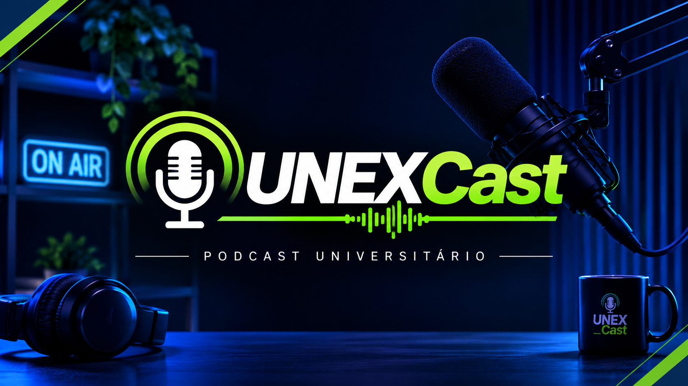

Podcast universitário
UNEXCast
Ideias que conectam pessoas, conhecimento que transforma.
Projeto de Extensão Eco Digital · Sistemas de Informação · UNEX, Vitória da Conquista.
Role para descobrirEpisódio
A IA está te deixando burro?
Ou você é que está deixando ela pensar no seu lugar?
Eco digital: O impacto da IA, redes sociais e streaming na cultura e na sociedade.

Sobre o UNEXCast
Mais que um podcast, um espaço de ideias.
Podcast do projeto de extensão Eco Digital, do curso de Sistemas de Informação da UNEX. Não é uma entrevista: é uma conversa em que todo mundo fala.
O projeto promove reflexão, aprendizagem e troca de conhecimentos em formato de conversa. (Texto provisório — substitua pela descrição oficial do projeto.)
Participantes
Conheça as pessoas que participaram deste episódio.
Desenvolvedores
Conheça a equipe responsável por desenvolver este site.